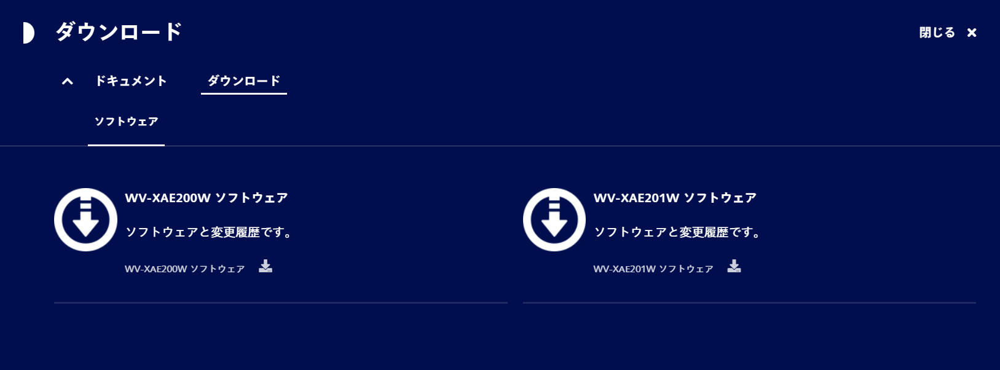
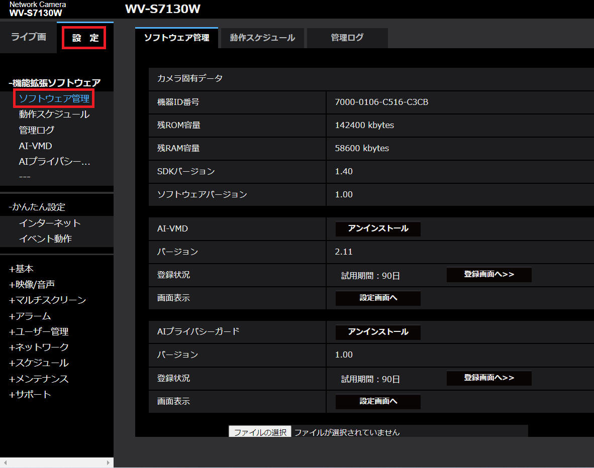
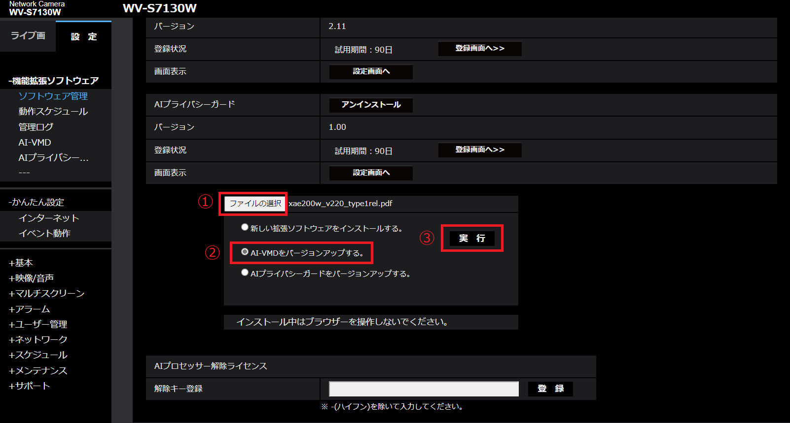
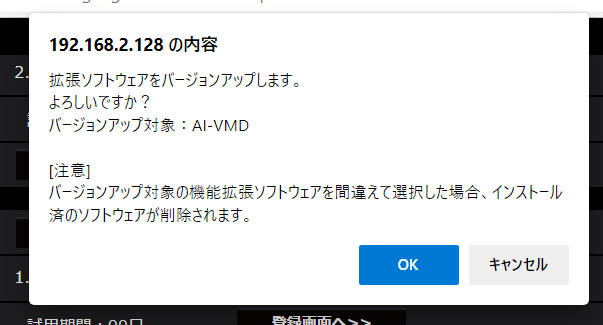
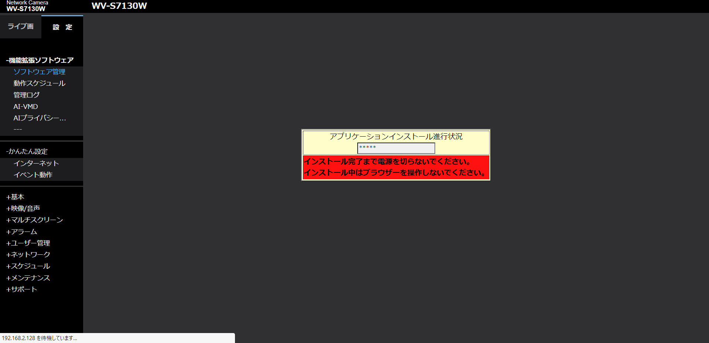
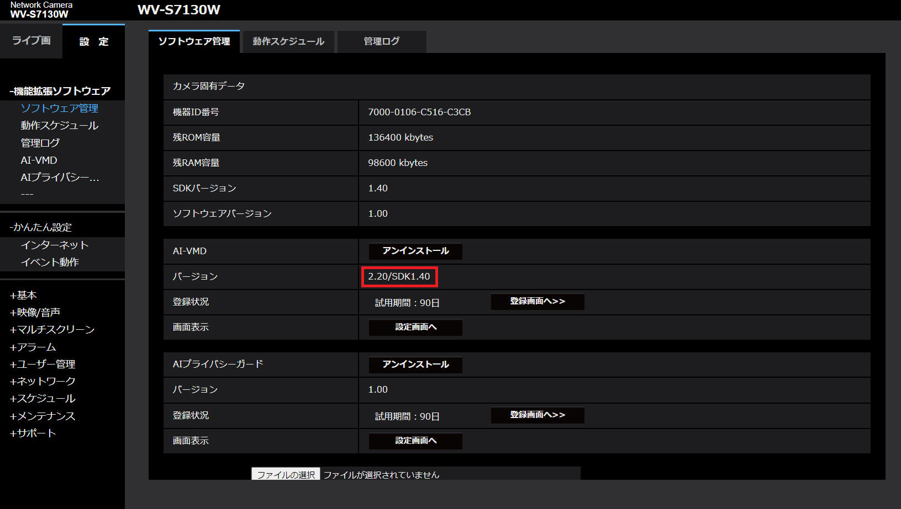
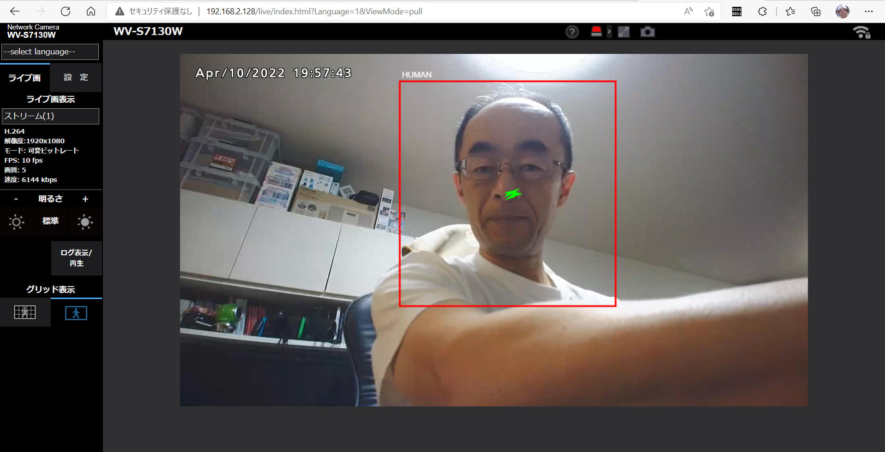

i-PRO の監視カメラ i-PRO mini (WV-S7130W) を入手したので、JPEG 形式で映像取得して遊んでみます。
ここではAI機能拡張ソフトウェア (WV-XAE200W) をインストールして遊んでみます。
製品紹介ページ：
AI機能拡張ソフトウェアから WV-XAE200W (AI動体検知アプリケーション)を入手して、i-PRO カメラへインストールします。
インストール済みの場合は、最新ファームウェアへアップデートします。
1. 最新版ファームウェアを入手（ダウンロード）
下記あたりから最新版ファームウェアを入手します。
※本書記載時点の最新版は v2.20 でした。

2. カメラへインストール
カメラを起動してブラウザから接続します。
「設定」>「ソフトウェア管理」 を開きます。
どうやら AI-VMD と AIプライバシーガード の２つはプレインストール済みのようです。
でも最新版ではなさそうなので、上記で取得した最新版へアップデートしてみます。

「ファイルの選択」>「AI-VMDをバージョンアップする」>「実行」 を順にクリックします。
選択するファイルは *.ext です。ここでは「XAE200_v220.ext」というファイルを選択しています。

こんな確認画面を表示するので、［OK］ボタンをクリックします。

ファームウェアアップデート中の画面です。

これで最新版(v2.20)へアップデートできました。

で「ライブ画」を表示してみます。
ちゃんと私を「HUMAN」として見つけてくれました。

i-PRO の資料によると JPEG,RTSP ともにパケットのヘッダ情報に AI-VMD の認識結果が記録されているようです。
私の技量では RTSP からこの情報を取り出すのは難があるので、JPEG から取り出しすることにチャレンジしてみます。
コメント領域に記録されている模様です。
| コンパイラ : | Visual Studio 2019 pro., | Version 16.6.0 |
| OS : | Windows10 home, | Version 1909 |
本ページの情報は、特記無い限り下記 MIT ライセンスで提供されます。
|
MIT License Copyright (c) 2022 Kinoshita Hidetoshi Permission is hereby granted, free of charge, to any person obtaining a copy of this software and associated documentation files (the "Software"), to deal in the Software without restriction, including without limitation the rights to use, copy, modify, merge, publish, distribute, sublicense, and/or sell copies of the Software, and to permit persons to whom the Software is furnished to do so, subject to the following conditions: The above copyright notice and this permission notice shall be included in all copies or substantial portions of the Software. THE SOFTWARE IS PROVIDED "AS IS", WITHOUT WARRANTY OF ANY KIND, EXPRESS OR IMPLIED, INCLUDING BUT NOT LIMITED TO THE WARRANTIES OF MERCHANTABILITY, FITNESS FOR A PARTICULAR PURPOSE AND NONINFRINGEMENT. IN NO EVENT SHALL THE AUTHORS OR COPYRIGHT HOLDERS BE LIABLE FOR ANY CLAIM, DAMAGES OR OTHER LIABILITY, WHETHER IN AN ACTION OF CONTRACT, TORT OR OTHERWISE, ARISING FROM, OUT OF OR IN CONNECTION WITH THE SOFTWARE OR THE USE OR OTHER DEALINGS IN THE SOFTWARE. |
| 2022-04-17 | - | ライセンスを追加 |
| 2022-04-10 | - | 新規作成 |